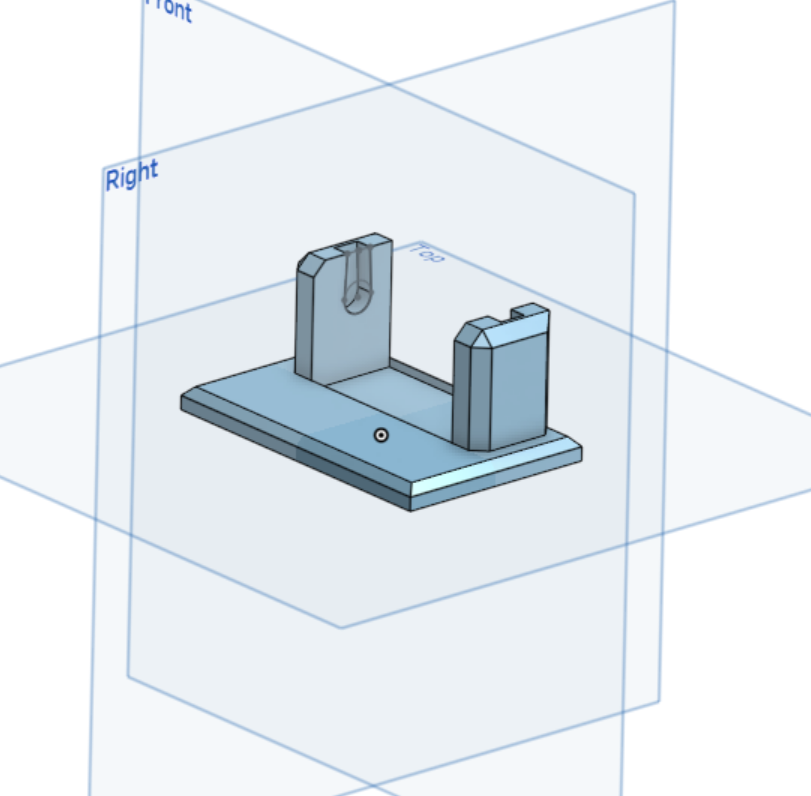
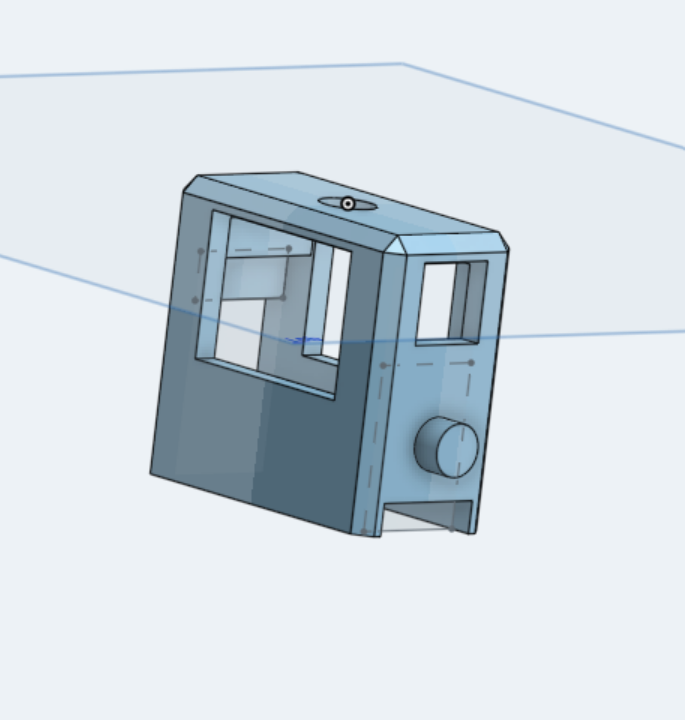
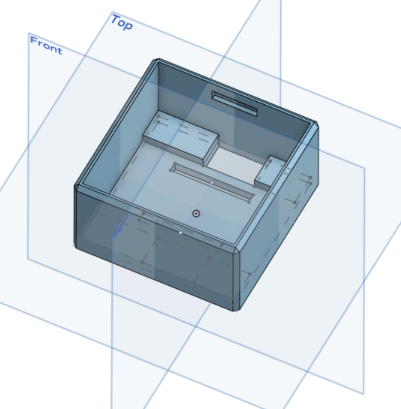
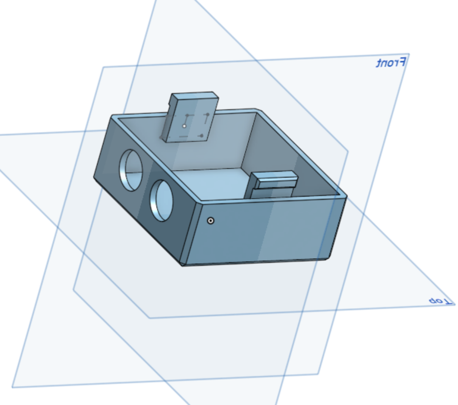

Modeling the otto robot
Introduction
Here, I am going to give you a few tips on how to model the different parts of the robot easily. I used Onshape to model them. It is easy to learn, and it is partly hosted on the Internet, so you don't need a graphics card, and there are several tutorials on the Internet. If you are a student, you can get a free account. I am making my parts available to you as stl files, so that you can print them directly in 3D.




Head
There is not much to say about the head. You have to pay attention to the dimensions of the eyes for the ultrasound sensor. The clip system was found at random but works, I can only advise you to use a bias to make it easier to attach between the head and the body. The height/width/length is up to you.
Body
The robot's body is a fairly complex part. It needs to be big enough to accommodate: a battery, 2 servo motors, a perfboard with 2 power converters and an arduino nano, plus lots of wires. Note that notches have been made on 2 opposite sides to accommodate the attachment system between the head and the body. A wire will escape from each motor coming from each leg: holes must therefore be provided so that these wires can be connected to the arduino. These holes are fine but long to allow the leg to turn without the wires rubbing. Finally, we need to make holes so that the motors can be connected to the legs. There are several solutions: we can decide to make holes that follow the shape of the motors (which is complicated with the precision of 3D printers), or we can decide to leave only the rotating part of the motor protruding. I opted for a solution that I didn't see on the other Otto models I found on the internet, but which seems simpler: the servomotors have notches designed to accommodate a screw. The servomotors have notches designed to accept a screw, so you plan to slightly overbore them to screw the servomotors onto them. All that remains is to leave a rectangle large enough to allow the servo motor to pass through, and to plan the height of the overcut correctly so that it can take a screw without it sticking out, but not so large that the servo motor sticks out below the body.
Legs
The leg is the most complex part to model. The leg must be able to link the body to the foot and accommodate an entire servo motor. Note that it is also symmetrical so that it can be used on both legs. We will describe it from top to bottom. A small hole and a trench are provided to receive the output gear of a servo / pinion motor from the body. On one side, there is a raised section for screwing in one of the servo motor screws, and a window opposite for easy access to this screw. There is a large hole to allow the servo motor to protrude, and a cylinder to fit into the foot. The 2 large windows are designed to give an overall view during final assembly. Finally, a second bar is provided to accommodate a 2nd screw.
Feet
The base has been made symmetrical so that it is suitable for both feet. It should be noted that the surface in contact with the ground is large to ensure that the robot is balanced. The holes for the motors follow the shape of a servomotor pinion. The rest of the design is just for style.